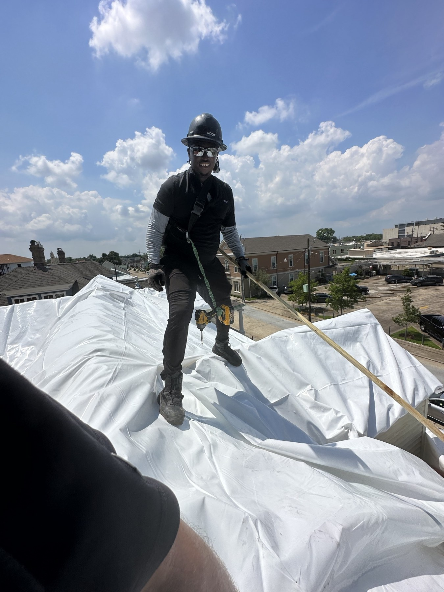
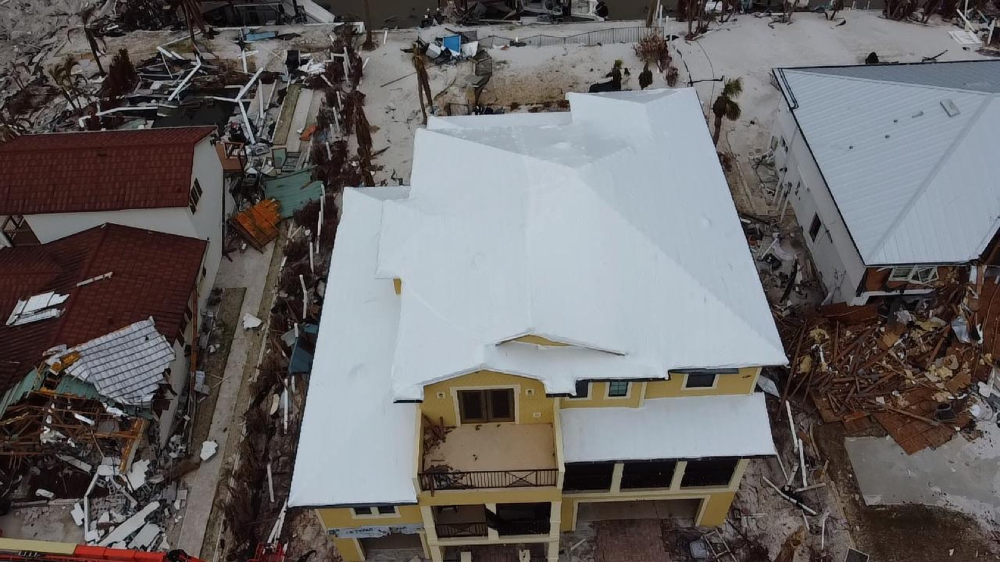
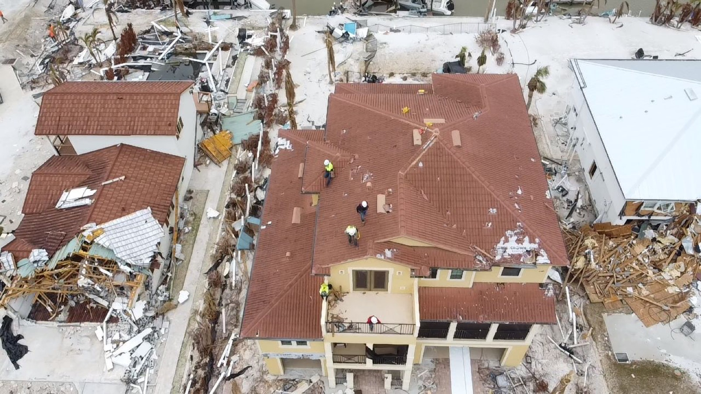
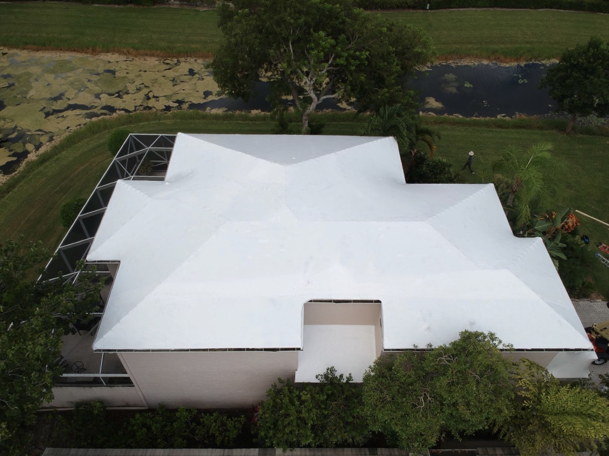
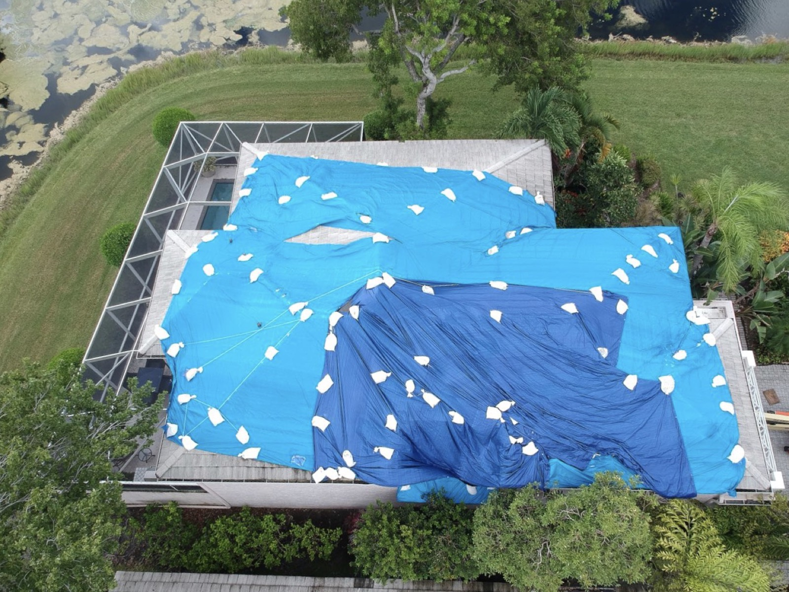

TITANIUM TARPS / FIELD TEAMJAITEH MOMODOU LAMIN
Call me Momo.
Certified Elastowrap Installer
Disaster Response
Installation Quality Control Inspector

TITANIUM TARPS / FIELD TEAMJAITEH MOMODOU LAMIN
Certified Elastowrap Installer
Disaster Response
Installation Quality Control Inspector
PROTECTION YOU CAN SEE
Drag each slider to compare.
Use the arrow keys when selected.


01 / TILE ROOF
A damaged tile roof, covered with a continuous white membrane.


02 / ROOF PROTECTION
A home’s blue tarps replaced with a fitted membrane covering.
ON THE ROOF. ON YOUR SIDE.
JAITEH MOMODOU LAMIN
Known on site as Momo—a Certified Elastowrap Installer and Disaster Response Installation Quality Control Inspector.
A quick introduction, straight from the field.